La Dra. Mariscal es una apasionada de la odontología. Terminó sus estudios en 2005 y, tras trabajar seis años en varias clínicas de Estepona y Sabinillas, abrió su propia consulta en Estepona en 2011.
Desde entonces trabajamos con un único objetivo: ser una clínica de referencia, mejorando la calidad del servicio odontológico con procesos eficientes para conservar la salud oral de nuestros pacientes.
Tratamos a los pacientes como nos gustaría que nos tratasen a nosotros: proponemos soluciones personalizadas tras estudiar cada caso, con pasión, honradez y empatía.
Espacios cómodos y equipados para tratamientos de calidad.
Radiología digital, cámara intraoral, diagnóstico 3D (CBCT) y localizador de ápices para endodoncias.
Protocolos estrictos de higiene y esterilización en cada gabinete.
La Dra. Mariscal lidera un equipo multidisciplinar en constante evolución y aprendizaje.
Directora médica · Ortodoncia, rehabilitación y estética dental
Odontología general y odontología infantil
Endodoncia, rehabilitación y estética dental
Cirugía e implantes
Higienista
Auxiliar
Auxiliar
Coordinación y recepción
Recepción
Ejercemos una odontología de calidad a precio asequible, con tratamientos conservadores de mínima invasión y fomentando la prevención. Haz click en cada tratamiento para saber más.
Obturación (empaste): devuelve la forma y función a dientes o muelas que la han perdido por una caries o un traumatismo. Tras anestesia local, se limpia y desinfecta la caries y se coloca el material restaurador.
Endodoncia ("matar el nervio"): cuando la caries es muy profunda o hay dolor o infección, se extirpa el paquete vasculonervioso del diente, se limpian y desinfectan los conductos, y se sellan herméticamente. Termina con una reconstrucción o corona.
Tartrectomía (limpieza de boca): elimina el sarro y las manchas de la superficie dental mediante ultrasonidos y pulido.
Raspado y alisado radicular: una "limpieza profunda" para pacientes con enfermedad periodontal o piorrea.
Contamos con más de dieciséis años de experiencia en el tratamiento de pacientes infantiles. Es importante una primera visita al dentista alrededor de los 3 ó 4 años para descartar caries o alteraciones en la mordida que requieran ortodoncia temprana. También enseñamos técnicas de cepillado y control de dieta.
Alineación de los dientes para conseguir una oclusión adecuada, una función correcta y belleza dental y facial, para pacientes de cualquier edad. Se colocan aparatos fijos multibrackets metálicos, de porcelana o linguales; en casos que afectan al hueso se trabaja en dos fases. Utilizamos técnicas de baja fricción, más respetuosas con los dientes.
La opción más segura, permanente y duradera para reemplazar uno, varios o todos los dientes. Se coloca un tornillo de titanio en el hueso que simula la raíz, y sobre él una corona. Tras un estudio individualizado con radiografías, se coloca mediante cirugía con anestesia local.
El postoperatorio dura de 24 a 48 horas, con dieta blanda e higiene rigurosa. El implante tarda de 8 a 12 semanas en osteointegrarse, tras lo cual se confecciona la prótesis definitiva.
Sustituyen los dientes que faltan devolviendo forma y función. Removibles: esqueléticas (base metálica y dientes de resina) o completamente de resina, parciales o completas. Fijas: coronas y puentes (metal-porcelana, porcelana o zirconio-porcelana), que requieren tallado previo del diente.
Estudiamos cada caso de forma individualizada para asesorar la mejor opción de tratamiento.
Cerámicas sin metal para coronas y carillas que devuelven forma y belleza a los dientes. Coronas de zirconio recubiertas de porcelana para zonas que requieren mayor resistencia, además de estética.
Realizamos blanqueamientos individualizados: en clínica con gel aplicado por el profesional, o en casa con una férula personalizada.
Resultados reales de nuestros pacientes. Haz click en cada caso para ver el antes y después.
Nuestro paciente acudió a la consulta preocupado porque un diente se le había oscurecido tras un golpe en la adolescencia que requirió una endodoncia. Con el tiempo el diente se oscureció. En sólo dos sesiones de blanqueamiento interno mejoramos el color y la sonrisa del paciente.
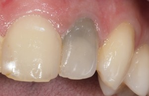
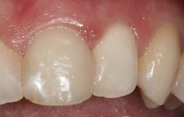
Nuestra paciente acudió porque no le gustaba su sonrisa: tenía un diente desalineado. Realizamos una carilla de porcelana para armonizar la proporción de sus dientes.
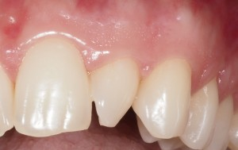
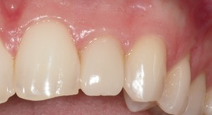
Paciente 1: se fracturó un diente de pequeño y la reconstrucción original se había oscurecido con el tiempo. Le renovamos la reconstrucción, mejorando la estética de su sonrisa.
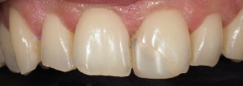
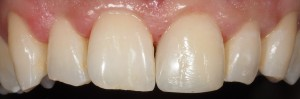
Paciente 2: se fracturó un diente practicando deporte. Le realizamos una reconstrucción estética que devolvió forma y función a su diente.
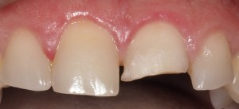
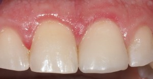
Este paciente presentaba mucho desgaste en sus dientes y buscaba una solución conservadora. Se sometió a una rehabilitación mediante carillas inyectadas: se añade material de empaste especial para reconstruir los dientes sin tallado, manteniendo la estructura dental previa. En sólo dos sesiones conseguimos estos resultados.
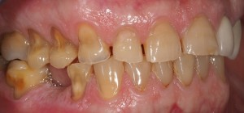
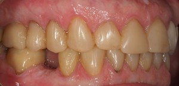
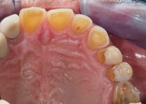
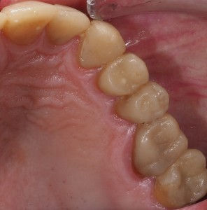
Nuestro pequeño paciente tenía un problema de mordida: sus dientes inferiores mordían "al revés". Con un tratamiento de ortodoncia temprana conseguimos solucionarlo en unos meses.
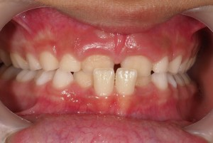
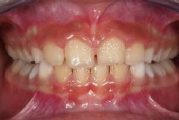
Nuestro paciente acudió porque no le gustaba su sonrisa. Combinamos ortodoncia y reconstrucciones estéticas de composite para conseguir el resultado deseado.
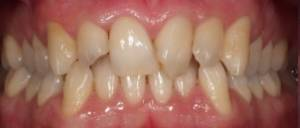
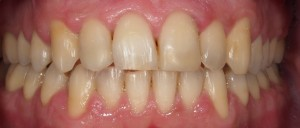
¿Tiene prisa y la clínica está cerrada? Escríbanos por WhatsApp y le contestaremos lo antes posible para concretar el día y la hora de su cita.